In this lesson you will learn
|
Somebody had to decide
The BAO distances of lesson L5.2, the supernova diagrams of Level 3, the lensing maps of Level 5 — each came from a survey whose designers had to choose where to point, how long to look, and which objects to measure. Those choices fixed the error bars years before the first photon arrived.
A survey design is a set of trade-offs between five quantities:
- Area — how much of the sky is covered. The whole sky is about 41 000 deg²; a telescope on the ground sees roughly half of it.
- Depth — how faint it goes, which sets how far in redshift it reaches.
- Density — how many objects per unit volume are measured.
- Redshift precision — spectroscopic or photometric.
- Time — the one budget that cannot be stretched.
Spectroscopy or imaging?
A spectroscopic survey takes a spectrum of every target and measures its redshift from spectral lines to about one part in ten thousand. That gives an exact three-dimensional map, ideal for measuring distances with BAO and the growth of structure from galaxy velocities. But spectra are expensive: even with thousands of fibres observing at once, a survey measures tens of millions of objects, not billions.
An imaging survey takes pictures through a few filters. From the colours alone it estimates a photometric redshift good to a few percent in
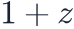
— too blurred along the line of sight for BAO in one slice, but it can measure billions of galaxies. Their shapes carry the signal of weak gravitational lensing, which weighs the dark matter directly.Two questions, two instruments Spectroscopy measures geometry — distances and the expansion history — very precisely. Imaging measures growth — how much matter has clumped — through lensing. The strongest constraints come from combining both on the same sky. |
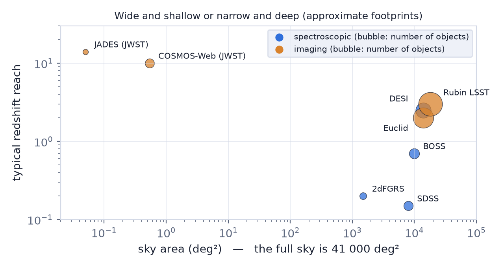
What limits a measurement
Two kinds of noise set the error bar of a galaxy survey.
Sample variance. The survey sees only a finite piece of the universe. Its patches of the cosmic web are a random draw, and a small volume contains few independent patches. The only cure is more volume.
Shot noise. Galaxies are discrete tracers of a smooth density field. With too few of them you cannot tell a real overdensity from a random clump; the noise power of a set of points is
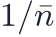
.Which one dominates is decided by a single number: the galaxy density
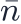
times the clustering power at the scale you care about. The survey behaves as if it had only an effective volume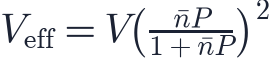
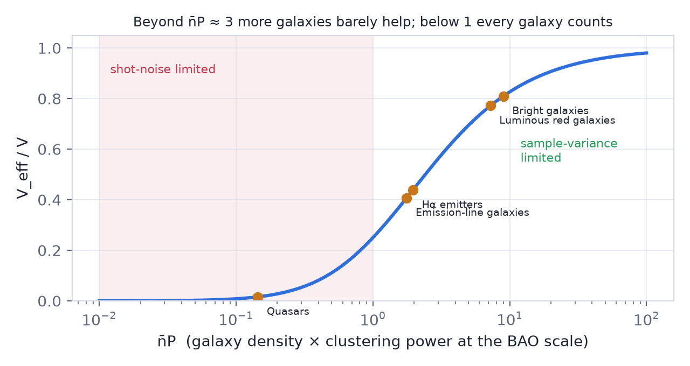
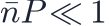
: shot noise dominates and every extra galaxy counts.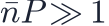
: sample variance dominates; more galaxies in the same volume are wasted, only more volume helps.
Why the optimum is n̄P = 1 Fix the number of galaxies and spread them over a volume , so 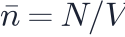 and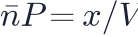 with . Then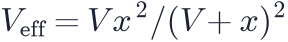 , which is largest at : exactly where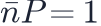 . Covering more sky than that dilutes the galaxies too much; covering less wastes them on a volume that is already well sampled. |
The distance error of a BAO measurement scales as , so a survey with four times the effective volume halves its error bar.
Try it: Survey Designer Start from the BOSS programme and switch to DESI luminous red galaxies. Read the volume, n̄P and the precision, then open "Wide or deep?" to see where the optimum area is. |
Which galaxies?
Not all galaxies are equally useful. Massive, red, old galaxies live in the densest regions and cluster strongly — they have a high bias — so each one carries more signal. Star-forming emission-line galaxies are fainter clusterers but easy to find at high redshift. Quasars are rare, so they are shot-noise limited, but they are bright enough to reach redshift 2 and beyond. A modern survey targets several populations at once, each filling a different range of redshift.
The facilities of this decade
| Facility | What it is | Survey | Main measurements |
|---|---|---|---|
| DESI | 4-m Mayall telescope, 5000 robotic fibres | ~14 000 deg², spectra of ~40 million galaxies and quasars (2021–2026) | BAO distances to z ≈ 3.5, growth from galaxy velocities |
| Euclid | 1.2-m ESA space telescope, launched 2023 | ~14 000 deg², shapes of ~1.5 billion galaxies, spectra of tens of millions | weak lensing, BAO at 0.9 < z < 1.8 |
| Rubin LSST | 8.4-m telescope, 3.2-gigapixel camera, first images 2025 | ~18 000 deg² every few nights for ten years, ~20 billion galaxies | weak lensing, millions of supernovae, strong lenses |
| JWST | 6.5-m infrared space telescope, launched 2021 | tiny, extremely deep fields | the first galaxies beyond z = 14, Cepheids and red giants for H0 |
Why so many? No single instrument does everything. DESI pins down the expansion history; Euclid and Rubin measure how structure grew, with different systematics; JWST checks the rungs of the distance ladder and the earliest galaxies. Where they overlap on the sky, their cross-correlations cancel many of each other's errors. |
What DESI changed DESI's first-year BAO measurement, from about six million redshifts, already rivalled the combined precision of the surveys that came before it — and, together with the CMB and supernovae, hinted that dark energy may evolve with time. Whether that hint survives is exactly the kind of question the next lessons are about. |
Try it: Survey Designer Choose quasars. Why does doubling their density help more than doubling the area? Then add telescope time until the density is no longer diluted. |
Remember this
|